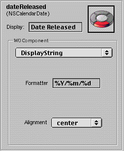

Direct To Web
PATH
WebObjects 4.0 Documentation >
WebObjects Tools and Techniques
 Table of Contents
Table of Contents  Previous Section
Previous Section
Changing How Properties Are Displayed
You can use the Customize Properties display of the WebAssistant to specify various display characteristics of properties, such as formatting, color, alignment, and the representation of to-many relationships. The fields and controls for setting these characteristics are on the right half of the display. Here is an example:

Let's go over the various elements of this part of the user interface:
The items in the WOComponent pop-up menu identify reusable components in the Direct to Web framework which are used to generate the pages you see in your application. Each property in a page of any type is initially shown in a default way for that type and is based on a certain component.
Table of Contents  Next Section
Next Section